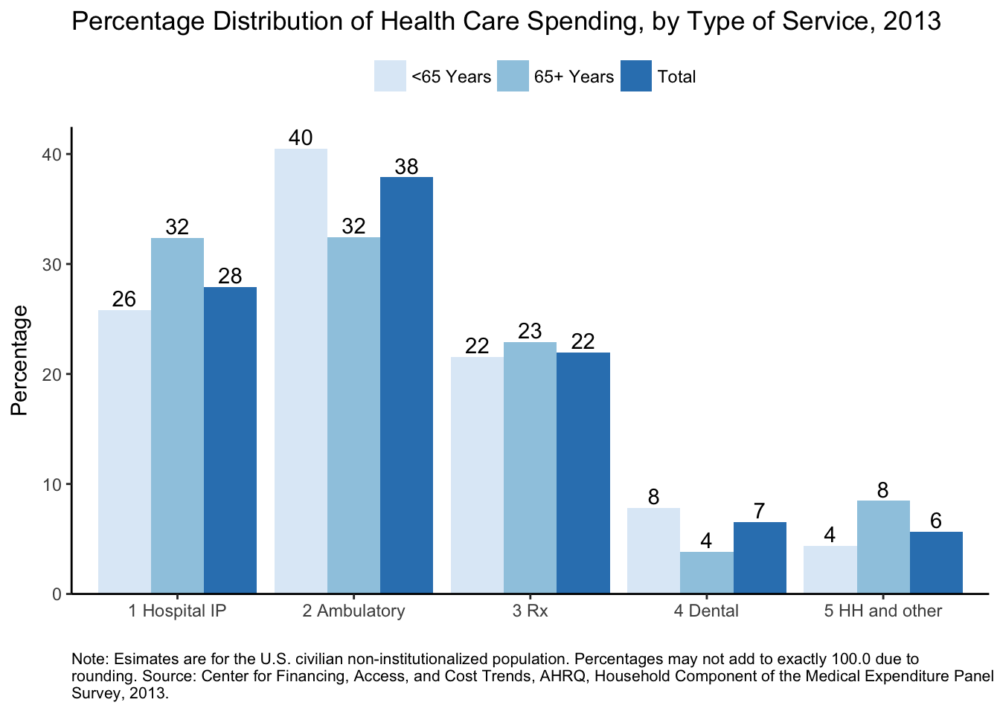

The goal of meps.hc is to wrap the Annual Consolidated Data Files from the Medical Expenditure Panel Survey (meps) Household Component (hc) in an R data package.
All variable labels and value labels are included. Variable names are in lowercase.
For more information about the consolidated MEPS-HC files, see the AHRQ webpages, or the example code from the HHS-AHRQ/MEPS repo by @e-mitchell.
For another attempt of downloading the MEPS data, see the ajdamico/asdfree repo by @ajdamico.
Currently the package includes data from 2011-2014. The rest of the files (1996-2010) will be packaged soon.
Installation
# install.packages("devtools")
devtools::install_github("jjchern/meps.hc")
# To uninstall the package, use:
# remove.packages("meps.hc")Usage
Load the datasets
# Load tibble via tidyverse for better printout
library(tidyverse)
meps.hc::f2014
#> # A tibble: 34,875 x 1,838
#> duid pid dupersid panel famid31 famid42 famid53 famid14
#> <dbl> <dbl> <chr> <fctr> <fctr> <fctr> <fctr> <fctr>
#> 1 40001 101 40001101 18 panel 18 A A A A
#> 2 40001 102 40001102 18 panel 18 A A A A
#> 3 40001 103 40001103 18 panel 18 A A A A
#> 4 40001 104 40001104 18 panel 18 A A A A
#> 5 40002 101 40002101 18 panel 18 A A A A
#> 6 40004 101 40004101 18 panel 18 A A A A
#> 7 40004 102 40004102 18 panel 18 A A A A
#> 8 40004 103 40004103 18 panel 18 A A A A
#> 9 40004 104 40004104 18 panel 18 A A A A
#> 10 40004 105 40004105 18 panel 18 A A A A
#> # ... with 34,865 more rows, and 1830 more variables: famidyr <fctr>,
#> # cpsfamid <fctr>, fcsz1231 <dbl>, fcrp1231 <fctr>, ruletr31 <fctr>,
#> # ruletr42 <fctr>, ruletr53 <fctr>, ruletr14 <fctr>, rusize31 <fctr>,
#> # rusize42 <fctr>, rusize53 <fctr>, rusize14 <fctr>, ruclas31 <fctr>,
#> # ruclas42 <fctr>, ruclas53 <fctr>, ruclas14 <fctr>, famsze31 <fctr>,
#> # famsze42 <fctr>, famsze53 <fctr>, famsze14 <dbl>, fmrs1231 <fctr>,
#> # fams1231 <dbl>, famszeyr <dbl>, famrfpyr <fctr>, region31 <fctr>,
#> # region42 <fctr>, region53 <fctr>, region14 <fctr>, refprs31 <dbl>,
#> # refprs42 <dbl>, refprs53 <dbl>, refprs14 <dbl>, resp31 <fctr>,
#> # resp42 <fctr>, resp53 <fctr>, resp14 <fctr>, proxy31 <fctr>,
#> # proxy42 <fctr>, proxy53 <fctr>, proxy14 <fctr>, intvlang <fctr>,
#> # begrfm31 <fctr>, begrfy31 <fctr>, endrfm31 <fctr>, endrfy31 <fctr>,
#> # begrfm42 <fctr>, begrfy42 <fctr>, endrfm42 <fctr>, endrfy42 <fctr>,
#> # begrfm53 <fctr>, begrfy53 <fctr>, endrfm53 <fctr>, endrfy53 <fctr>,
#> # endrfm14 <fctr>, endrfy14 <fctr>, keyness <fctr>, inscop31 <fctr>,
#> # inscop42 <fctr>, inscop53 <fctr>, inscop14 <fctr>, insc1231 <fctr>,
#> # inscope <fctr>, elgrnd31 <fctr>, elgrnd42 <fctr>, elgrnd53 <fctr>,
#> # elgrnd14 <fctr>, pstats31 <fctr>, pstats42 <fctr>, pstats53 <fctr>,
#> # rurslt31 <fctr>, rurslt42 <fctr>, rurslt53 <fctr>, age31x <dbl>,
#> # age42x <dbl>, age53x <dbl>, age14x <dbl>, agelast <dbl>, dobmm <fctr>,
#> # dobyy <fctr>, sex <fctr>, racev1x <fctr>, racev2x <fctr>,
#> # raceax <fctr>, racebx <fctr>, racewx <fctr>, racethx <fctr>,
#> # hispanx <fctr>, hispncat <fctr>, marry31x <fctr>, marry42x <fctr>,
#> # marry53x <fctr>, marry14x <fctr>, spouid31 <fctr>, spouid42 <fctr>,
#> # spouid53 <fctr>, spouid14 <fctr>, spouin31 <fctr>, spouin42 <fctr>,
#> # spouin53 <fctr>, spouin14 <fctr>, ...Replicate Estimates from the MEPS Summary Table
This section replicates the first row of MEPS summary table for 2013 data.
The code are modified from
Show variable labels for selected variables
meps.hc::f2013 %>%
select(varpsu, varstr, perwt13f, totexp13,
totslf13, totptr13, totmcr13, totmcd13,
totva13, totwcp13, tototh13) %>%
labelled::var_label() %>%
enframe() %>%
unnest() %>%
knitr::kable()| name | value |
|---|---|
| varpsu | variance estimation psu - 2013 . |
| varstr | variance estimation stratum - 2013 |
| perwt13f | final person weight, 2013 |
| totexp13 | total health care exp 13 |
| totslf13 | total amt paid by self/family 13 |
| totptr13 | total amt paid by prv & tri 13 |
| totmcr13 | total amt paid by medicare 13 |
| totmcd13 | total amt paid by medicaid 13 |
| totva13 | total amt paid by va/champva 13 |
| totwcp13 | total amt paid by workers comp 13 |
| tototh13 | total amt paid by oth combined 13 |
Estimate total healthcare expenditures in 2013
library(survey)
# 'adjust': center the stratum at the population mean
# rather than the stratum mean
options(survey.lonely.psu = 'adjust')
mepsdsgn = svydesign(id = ~varpsu, # cluster ids
strata = ~varstr,
weights = ~perwt13f, # sampling weights
data = meps.hc::f2013,
nest = TRUE) # enforce nesting within strata
# Replicate estimates reported in
svytotal(~totexp13, design = mepsdsgn) %>%
as_tibble() %>%
transmute(`2013 US Tot. Exp. (in millions)` = total / 1000000,
`Std. Err. (in millions)` = totexp13 / 1000000) %>%
knitr::kable()| 2013 US Tot. Exp. (in millions) | Std. Err. (in millions) |
|---|---|
| 1400523 | 43378.01 |
Total US population in 2013
# Standard errors are not applicable to population control totals, so we don't need to use a survey function here.
# The total population is equal to the sum of survey weights (PERWT13F).
sum(meps.hc::f2013$perwt13f) %>%
as_tibble() %>%
transmute(`Population (in thousands)` = value / 1000,
`Std. Err.` = "NA") %>%
knitr::kable(digits = 0)| Population (in thousands) | Std. Err. |
|---|---|
| 315722 | NA |
Percent of people with any expense in 2013
# To calculate the percent of people with any expense, first update mepsdsgn with a new indicator variable for persons with an expense:
update(mepsdsgn, any_expense = (totexp13 > 0) * 1) -> mepsdsgn
# Then run the 'svymean' function
svymean(~any_expense, design = mepsdsgn) %>%
as_tibble() %>%
transmute(`Percent with expense` = mean * 100,
`Std. Err.` = any_expense * 100) %>%
knitr::kable(digits = 1)| Percent with expense | Std. Err. |
|---|---|
| 84.4 | 0.4 |
Mean and median expense per person in 2013
# To get expenses per person with an expense, use the 'subset' function to limit the dataset to persons that have an expense (i.e. any_expense == 1).
svymean(~totexp13, design = subset(mepsdsgn, any_expense == 1)) %>%
as_tibble() %>%
transmute(`Mean (per person with an expense)` = mean,
`Std. Err.` = totexp13) %>%
knitr::kable(digits = 0)| Mean (per person with an expense) | Std. Err. |
|---|---|
| 5256 | 118 |
svyquantile(~totexp13,
design = subset(mepsdsgn, any_expense==1),
quantiles = 0.5) %>%
as_tibble() %>%
transmute(`Median (per person with an expense)` = `0.5`,
`Std. Err.` = "NA") %>%
knitr::kable()| Median (per person with an expense) | Std. Err. |
|---|---|
| 1389 | NA |
Distribution by source of payment in 2013
# Before estimating percentages for 'Other' insurance, we need to adjust this variable to match the online table:
# Other = VA + worker's comp + other sources.
update(mepsdsgn, tototh13 = totva13 + totwcp13 + tototh13) -> mepsdsgn
# For percent of total, use the `svyratio` function, and specify the numerator and denominator.
# Use a '+' sign to calculate estimates for multiple variables.
svyratio(~totslf13 + totptr13 + totmcr13 + totmcd13 + tototh13,
denominator = ~totexp13,
design = mepsdsgn) %>%
{tibble(
`Percent of total expenses by source of payment` =
coef(.) %>% names(),
`Estimates` = coef(.) * 100,
`Std. Err.` = SE(.) * 100
)} %>%
knitr::kable(digits = 1)| Percent of total expenses by source of payment | Estimates | Std. Err. |
|---|---|---|
| totslf13/totexp13 | 13.8 | 0.4 |
| totptr13/totexp13 | 40.6 | 1.1 |
| totmcr13/totexp13 | 25.3 | 0.9 |
| totmcd13/totexp13 | 12.4 | 0.7 |
| tototh13/totexp13 | 7.9 | 0.5 |
Replicate Figure 1 in MEPS Statistical Brief #491
This section replicates Figure 1 in MEPS Statistical Brief #491
The code are modified from
-
HHS-AHRQ/MEPS/R:Analyzing MEPS data using R, and HHS-AHRQ/MEPS/R/example_1.RHHS-AHRQ/MEPS/R/example_2.R
Show variable labels for selected variables
meps.hc::f2013 %>%
select(varpsu, varstr, perwt13f, totexp13,
obvexp13, optexp13, ertexp13,
hhaexp13, hhnexp13, visexp13, othexp13,
iptexp13, rxexp13, dvtexp13,
agelast) %>%
labelled::var_label() %>%
enframe() %>%
unnest() %>%
knitr::kable()| name | value |
|---|---|
| varpsu | variance estimation psu - 2013 . |
| varstr | variance estimation stratum - 2013 |
| perwt13f | final person weight, 2013 |
| totexp13 | total health care exp 13 |
| obvexp13 | total office-based exp 13 |
| optexp13 | total outpatient fac + dr exp 13 |
| ertexp13 | total er facility + dr exp 13 |
| hhaexp13 | total home health agency exp 13 |
| hhnexp13 | total home health non-agncy exp 13 |
| visexp13 | total glasses/contact lens exp 13 |
| othexp13 | tot other equip/sply (excl diab) exp 13 |
| iptexp13 | tot hosp ip facility + dr exp 13 |
| rxexp13 | total rx-exp 13 |
| dvtexp13 | total dental care exp 13 |
| agelast | person s age last time eligible |
Estimate distribution of expense by TOS in 2013
# To get ambulatory (OB + OP) and home health/other expenditures, add variables to the mepsdsgn object.
mepsdsgn <- update(mepsdsgn,
ambexp13 = obvexp13 + optexp13 + ertexp13,
hhexp13 = hhaexp13 + hhnexp13 + visexp13 + othexp13)
# Use svyratio to calculate percentage distribution of spending by type of service:
pct_tos = svyratio(
~iptexp13 + ambexp13 + rxexp13 + dvtexp13 + hhexp13,
denominator = ~totexp13,
design = mepsdsgn
)
# Now do the same thing by age group (<65, 65+), using the `subset` function.
pct_tos_lt65 = svyratio(
~iptexp13 + ambexp13 + rxexp13 + dvtexp13 + hhexp13,
denominator = ~totexp13,
design = subset(mepsdsgn, agelast < 65)
)
pct_tos_ge65 = svyratio(
~iptexp13 + ambexp13 + rxexp13 + dvtexp13 + hhexp13,
denominator = ~totexp13,
design = subset(mepsdsgn, agelast >= 65)
)
# Combine all three tables
tibble(tos = names(coef(pct_tos)),
pct = coef(pct_tos) * 100,
age = "Total") -> total
tibble(tos = names(coef(pct_tos_lt65)),
pct = coef(pct_tos_lt65) * 100,
age = "<65 Years") -> lt65
tibble(tos = names(coef(pct_tos_ge65)),
pct = coef(pct_tos_ge65) * 100,
age = "65+ Years") -> ge65
bind_rows(total, lt65, ge65) %>%
mutate(tos = case_when(
grepl("ipt", tos) ~ "1 Hospital IP",
grepl("amb", tos) ~ "2 Ambulatory",
grepl("rx" , tos) ~ "3 Rx",
grepl("dvt", tos) ~ "4 Dental",
grepl("hh" , tos) ~ "5 HH and other"
)) -> df
knitr::kable(df)| tos | pct | age |
|---|---|---|
| 1 Hospital IP | 27.911022 | Total |
| 2 Ambulatory | 37.882294 | Total |
| 3 Rx | 21.977145 | Total |
| 4 Dental | 6.556864 | Total |
| 5 HH and other | 5.672677 | Total |
| 1 Hospital IP | 25.795551 | <65 Years |
| 2 Ambulatory | 40.464733 | <65 Years |
| 3 Rx | 21.540182 | <65 Years |
| 4 Dental | 7.848380 | <65 Years |
| 5 HH and other | 4.351155 | <65 Years |
| 1 Hospital IP | 32.383667 | 65+ Years |
| 2 Ambulatory | 32.422359 | 65+ Years |
| 3 Rx | 22.900994 | 65+ Years |
| 4 Dental | 3.826268 | 65+ Years |
| 5 HH and other | 8.466711 | 65+ Years |
Create the plot
caption = "Note: Esimates are for the U.S. civilian
non-institutionalized population. Percentages may not add to exactly
100.0 due to rounding. Source: Center for Financing, Access, and Cost
Trends, AHRQ, Household Component of the Medical Expenditure Panel
Survey, 2013." %>%
{paste0(strwrap(., 130), sep="", collapse="\n")}
df %>%
ggplot(aes(x = tos, y = pct, fill = age)) +
geom_col(position = "dodge") +
scale_fill_brewer() +
labs(y = "Percentage", x = "",
title = "Percentage Distribution of Health Care Spending, by Type of Service, 2013",
caption = caption) +
geom_text(aes(label = round(pct)),
position = position_dodge(width = 0.9),
vjust = -0.25) +
theme_classic() +
theme(legend.position="top",
legend.title = element_blank(),
axis.line.x = element_line(colour = "black"),
axis.line.y = element_line(colour = "black"),
plot.caption = element_text(size = 8, hjust = 0)) +
scale_y_continuous(expand = c(0,0),
limits = c(0, max(df$pct) + 2))